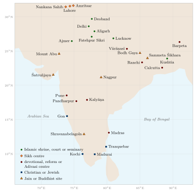

Chapter 16: Many Paths in One Land: Islam, Sufism, Sikhism and Christianity in India¶
ik oaṅkār sati nāmu karatā purakhu nirabhau niravairu
akāl mūrati ajūnī saibhaṅ gur prasādi
One Being; Truth is the name; the Creator; without fear, without enmity; of timeless form; unborn; self-existent; known by the Guru’s grace.
— the Mūl Mantar, opening of the Guru Granth Sahib
16.1 Many Traditions, One Land¶
Muslims are the second largest religious community in India (about 14 per cent of the population in the 2011 census), and Islam has been part of Indian life for some thirteen centuries; Sikhism was born in Punjab and has its own scripture, institutions and history; Christianity has been present in Kerala since at least the middle of the first millennium. This chapter follows the intellectual encounters among these traditions and between them and the traditions discussed elsewhere in the series; as Chapter 1 explains, it is an introduction to fields that the series does not otherwise cover. Figure 16.1 shows where some of the encounters it describes took place.

Two simplifications should be avoided at the outset. One presents the history of Islam in India as a story of foreign invasion, iconoclasm and forced conversion. The other presents it as a story of harmonious “composite culture” in which Hindus and Muslims merged their beliefs in a shared spirituality. Both contain truths; both leave out a great deal. Richard Eaton’s histories and Romila Thapar’s study of the many ways in which the sack of the Somanātha temple in 1026 has been remembered show how the evidence supports neither caricature (Eaton 2019; Thapar 2005).
16.2 Islam in India¶
16.2.1 Arrival and spread¶
Arab merchants had settled on the western coast of India before Islam, and Muslim trading communities were established in Kerala and Gujarat from the eighth century. Sindh was conquered by an Arab army under Muḥammad ibn Qāsim in 711–12. The Ghaznavid ruler Maḥmūd raided north India repeatedly between about 1000 and 1027, sacking temples including Somanātha, while Ghaznavid rule in Punjab brought scholars such as al-Bīrūnī into contact with Indian learning (Chapter 8). The Delhi Sultanate (from 1206) and its successor states, and then the Mughal empire (1526–1857), made north and central India part of a wider Persianate world that stretched from Anatolia to Bengal. Eaton has shown that conversion to Islam was concentrated not, as often assumed, in the heartlands of Muslim political power, but on the agrarian frontiers of eastern Bengal and western Punjab, where communities settled new lands around mosques and shrines over several centuries (Eaton 1993). Most Indian Muslims are descended from local converts.
16.2.2 Akbar and the Mughal court¶
The Mughal emperor Akbar (r. 1556–1605) made religious debate a matter of state. From 1575 his “house of worship” (ʿIbādat-khāna) at Fatehpur Sikri hosted debates among Sunni and Shiʿi scholars and later among Brahmins, Jains, Zoroastrians and Jesuit missionaries from Goa. He adopted a policy called ṣulḥ-i kull, “peace with all”, abolished the poll-tax on non-Muslims, appointed Hindus to high office and married Rajput princesses. The Jain monk Hīravijaya and his successors won concessions such as bans on animal slaughter during the Jain festival of Paryuṣaṇa. Akbar’s court historian Abū al-Faẓl included in his Āʾīn-i Akbarī a survey of Indian philosophy, sciences and customs, and the court sponsored the Persian translations of Sanskrit works described in Chapter 8. Audrey Truschke’s study shows that Sanskrit scholars, including Jains, were active at the Mughal courts for more than a century and wrote about their Muslim patrons in Sanskrit (Truschke 2016; Rizvi 1975). Akbar’s policies were bitterly opposed by some Muslim scholars, notably the Naqshbandī Sufi Aḥmad Sirhindī (1564–1624), who called for the restoration of the primacy of Islamic law.
16.2.3 Dārā Shikoh¶
Akbar’s great-grandson Dārā Shikoh (1615–1659), eldest son of Shāh Jahān, was a disciple of the Qādirī Sufi order and a student of Vedānta. In the Majmaʿ al-Baḥrayn (“The Meeting-Place of the Two Seas”, 1655), whose title alludes to a phrase in the Qurʾān, he set the technical vocabularies of Sufism and of Vedānta side by side — the elements, the senses, the divine names, the stages of the soul — and concluded that between the two traditions there was no difference except of words. In 1657 he sponsored the Sirr-i Akbar, a Persian translation of some fifty Upaniṣads, which he believed to be the “hidden book” referred to in the Qurʾān (56:77–80); its Latin version later introduced the Upaniṣads to Europe (Chapter 8). In the war of succession that followed, he was defeated by his brother Aurangzeb and executed in 1659 on a charge of apostasy. Supriya Gandhi’s biography places him in the context of Mughal court culture and shows how both his admirers and his detractors have turned him into a symbol (Gandhi 2020). In modern Indian politics Dārā and Aurangzeb have come to stand for two opposed visions of Indian Islam, a symbolism that simplifies both men.
16.3 Indo-Persian and Islamic Learning before 1800¶
The encounter at Akbar’s court was the most famous episode in a much longer history of learning, which the standard accounts of “Indian knowledge” often leave out. From the thirteenth century to the nineteenth, Persian was the language of administration, history, poetry and much science across most of the subcontinent, and Arabic the language of law and theology; together they carried a body of learning that Indian scholars, Muslim and Hindu, studied, extended and connected with Sanskrit learning. The series treats the philosophical schools in Volume 3, literature in Volume 8 and language in Volume 10; this section outlines the Indo-Persian side of the same centuries.
16.3.1 The madrasa and the rational sciences¶
The madrasa curriculum distinguished the “transmitted” sciences (manqūlāt) — Qurʾān, ḥadīth, law and its principles — from the “rational” sciences (maʿqūlāt): logic, philosophy, theology argued by reason (kalām), mathematics, astronomy and medicine. In India the rational sciences enjoyed unusual prestige. At Akbar’s court the Iranian scholar Fatḥullāh Shīrāzī (d. 1589) is credited with strengthening their place in teaching, and in eighteenth-century Lucknow the scholars of Farangī Maḥall, above all Mullā Niẓām al-Dīn (d. 1748), devised the Dars-i Niẓāmī, a curriculum that gave logic, philosophy and theology a prominent place and was taught in madrasas across South Asia into the twentieth century. Francis Robinson’s study of the Farangī Maḥall family shows how a household of scholars sustained this tradition for three centuries, through teaching, Sufi affiliation and service to rulers (Robinson 2001). Indian scholars wrote commentaries and glosses on the standard Arabic handbooks of logic and philosophy that were read as far away as Cairo and Istanbul. The Graeco-Arabic medicine known in India as Unani (“Greek”) ṭibb was brought by physicians from Iran and Central Asia; it absorbed Indian drugs and some Āyurvedic ideas, and it remains a recognised system of medicine in India today (Volume 13). The relation between reason and revelation that these scholars debated is set beside the Indian theories of the means of knowledge in Chapter 4.
Law and ethics formed a second pillar. The Mughal emperor Aurangzeb (r. 1658–1707) sponsored the Fatāwā-yi ʿĀlamgīrī, a great compilation of Ḥanafī law, and Shāh Walī Allāh of Delhi (1703–1762), theologian and translator of the Qurʾān into Persian, sought to reconcile the schools of law and the rival metaphysics of the Sufis (Schimmel 1980). Muzaffar Alam has shown that the political thought of the Indo-Persian courts drew less on the law (sharīʿa) than on a Persian literature of ethics and statecraft (akhlāq), descended from the thirteenth-century Akhlāq-i Nāṣirī of Naṣīr al-Dīn Ṭūsī, which made justice and the balance of the different groups in society, Muslim and non-Muslim, the measure of good rule; this, he argues, is part of what made a policy such as Akbar’s “peace with all” thinkable (Alam 2004). Ziyāʾ al-Dīn Baranī’s fourteenth-century writings on history and kingship give the contrasting view of a scholar who wished rulers to favour the faith.
16.3.2 Translation in both directions¶
Persian learning in India was not confined to Muslims, and it did not ignore Sanskrit. Hindu scribes and secretaries (munshī), many of them Kāyasthas and Khatrīs, mastered Persian and wrote in it with distinction; Rajeev Kinra’s study of Chandar Bhān Brahman, a secretary at the court of Shāh Jahān, shows such a writer at home in Persian poetry, ethics and court culture (Kinra 2015). Translation ran in both directions. Al-Bīrūnī’s Arabic versions of the Yogasūtra and a Sāṃkhya text (Chapter 8) were followed by Arabic and Persian versions of a treatise on yoga known as the Amṛtakuṇḍa, by Persian works on medicine drawing on Sanskrit sources, such as the Maʿdan al-shifāʾ compiled under the Lodī sultans in the early sixteenth century, and, at Akbar’s court, by Persian translations of the epics, of the Yogavāsiṣṭha and of Bhāskara’s arithmetic, the Līlāvatī, made by the poet Fayżī. Carl Ernst has argued that these translations should not be read simply as “Muslim studies of Hinduism”: they were chosen for their value in astronomy, medicine, ethics and mystical practice, subjects that the translators regarded as parts of a common learning (Ernst 2003). In the other direction, the Jain astronomer Mahendra Sūri wrote at the court of Fīrūz Shāh Tughluq the Yantrarāja (1370), the first Sanskrit treatise on the astrolabe; Sanskrit scholars at the Mughal court compiled grammars and lexicons of Persian for Sanskrit readers; and Sanskrit astronomers studied Islamic tables and instruments (Truschke 2016).
The most ambitious meeting of the two astronomies took place under Sawai Jai Singh II of Amber (1688–1743), who built large masonry observatories — the Jantar Mantar — at Delhi, Jaipur, Ujjain, Varanasi and Mathura in the 1720s and 1730s, compiled new astronomical tables in Persian dedicated to the emperor Muḥammad Shāh, and sponsored Sanskrit translations of works of Islamic and Greek astronomy, including a version of Ptolemy’s Almagest. His project shows Hindu, Muslim and, through contacts with Jesuits, European astronomy in active conversation in eighteenth-century India (Volume 12). In the same century the Dabistān-i Mazāhib, a Persian survey of the religions of India and Iran written in the mid-seventeenth century, described Hindu, Jain, Sikh, Zoroastrian, Jewish, Christian and Muslim beliefs largely in their adherents’ own terms, a work of comparative religion with few parallels in its time.
This body of learning declined with the courts that supported it and was marginalised when English replaced Persian as the language of government and the courts in the 1830s. Its recovery is one of the clearest tasks for a programme of research on Indian knowledge that takes the word “Indian” seriously (Chapter 22).
16.4 Sufism¶
16.4.1 The orders¶
Sufism, the mystical and devotional dimension of Islam, was organised in India, as elsewhere, into orders (silsila) tracing their spiritual lineage to the Prophet through a chain of masters. The Chishtī order, founded in India by Muʿīn al-Dīn Chishtī (d. 1236), who settled at Ajmer, became the most widespread; its masters, including Niẓām al-Dīn Awliyāʾ of Delhi (d. 1325), emphasised love of God, generosity, independence from rulers (in principle, if not always in practice) and the use of music in the ceremony of listening (samāʿ). The poet and musician Amīr Khusrau (1253–1325), a disciple of Niẓām al-Dīn, wrote in Persian and in the vernacular of Delhi and is honoured as a founder of the qawwālī tradition; the popular claim that he invented the sitār and the tablā is not supported by evidence (Volume 9). The Suhrawardī, Qādirī and Naqshbandī orders were also important. Carl Ernst and Bruce Lawrence’s study of the Chishtīs is the best introduction (Ernst and Lawrence 2002).
16.4.2 Sufi shrines and poetry¶
The tombs (dargāh) of Sufi saints became centres of pilgrimage for people of all communities, and remain so today; the annual festival (ʿurs) at Ajmer draws hundreds of thousands of pilgrims, many of them Hindus. Sufi poets composed in the regional languages of India: Bābā Farīd (d. 1266) in Punjabi, some of whose verses were later included in the Sikh scripture; Malik Muḥammad Jāyasī, whose Hindavi romance Padmāvat (1540) used an Indian story as an allegory of the soul’s quest for God; Bulleh Shāh (1680–1757) in Punjabi; Shāh ʿAbd al-Laṭīf (1689–1752) in Sindhi. Their work is among the clearest examples of genuine synthesis in Indian literature: Islamic mystical ideas expressed in Indian forms, images and languages (Volume 8).
16.4.3 Sufism and Vedānta: a caution¶
Sufism is sometimes presented as Islam’s “Indian” or “Vedāntic” side, and Sufis as tolerant syncretists who stood apart from the Muslim orthodoxy of rulers and scholars. The picture needs correction. Sufism was not borrowed from Vedānta; its roots are in the Qurʾān and in the early mystics of Iraq and Iran, and the metaphysics of the “unity of being” (waḥdat al-wujūd) that some Indian Sufis shared with Vedāntins came from the Andalusian thinker Ibn ʿArabī (1165–1240). Many Sufi masters were scholars of Islamic law; some were close to rulers; some sought converts. And within Indian Sufism the “unity of being” was challenged by Aḥmad Sirhindī’s doctrine of the “unity of witnessing” (waḥdat al-shuhūd), which insisted on the distinction between God and creation. Annemarie Schimmel’s survey gives a balanced picture (Schimmel 1980). The genuine affinities between Sufi and Indian devotional and mystical traditions are better appreciated when they are not used to dissolve either tradition into the other.
16.5 Islam in the South¶
The Islam of South India developed largely through trade rather than conquest, and it took forms distinct from those of the north. On the Malabar coast, the Māppiḷa Muslims descend from Arab traders and local converts; they speak Malayalam, followed the Shāfiʿī school of law common around the Indian Ocean rather than the Ḥanafī school of the north, and developed a literature in Arabi-Malayalam, Malayalam written in the Arabic script. Zayn al-Dīn al-Maʿbarī’s Arabic history Tuḥfat al-Mujāhidīn (late sixteenth century) describes the Portuguese assault on the Malabar trade and the Muslim resistance to it. On the Coromandel coast, Tamil-speaking Muslim communities produced a rich Islamic literature in Tamil; the most famous work, Umaru Pulavar’s Cīṟāppurāṇam (c. 1700), tells the life of the Prophet in the form and style of a classical Tamil epic, with descriptions of Arabian landscapes in the conventions of Tamil poetry. Such works show the “translation” of Islam into Indian literary forms discussed below for Bengal, carried out by Muslims writing for Muslims in their own language. They also show that Indian Islam was not only a Persianate court culture but also a maritime, multilingual and local one.
16.6 Devotion in the South, the West and the East¶
The devotional poetry that inspired the north Indian sants had begun much earlier in the south. Between the sixth and ninth centuries the Tamil Vaiṣṇava Āḻvārs and Śaiva Nāyaṉmārs sang hymns in Tamil to Viṣṇu and Śiva at temples across the Tamil country; their collections, the Nālāyira Divya Prabandham and the Tēvāram, came to be treated as a Tamil Veda. Several of these poets came from low or outcaste communities — the Āḻvār Tiruppāṇ, the Nāyaṉār Nantaṉār — and the hagiographies tell how their devotion overcame the barriers of caste, though often by miracles that confirmed rather than abolished the system. In twelfth-century Karnataka the Vīraśaiva vacana poets around Basava, including the woman saint Akka Mahādēvi, rejected temple ritual and caste in favour of devotion to Śiva and honest work. In Maharashtra the Vārkarī poets — Jñāneśvar (13th century), Nāmdev, Cokhāmeḷā and later Tukārām (17th century) — composed devotional songs in Marathi for the god Viṭhobā of Pandharpur that are still sung by pilgrims. Volume 8 discusses this literature.
In the Brahmaputra valley of Assam, Śaṅkaradeva (traditionally 1449–1568) founded a devotional order that its followers call ekaśaraṇa nāma dharma, “the religion of refuge in the One, through the name”. It taught exclusive devotion to Kṛṣṇa as the supreme God, expressed above all in the congregational singing of his name and deeds, and it rejected the worship of other deities, animal sacrifice and much Brahmanical ritual. Śaṅkaradeva and his disciple Mādhavadeva composed in Assamese the verse narratives, songs (bargīt) and one-act plays (aṅkīyā nāṭ) that are still performed, and their movement created two lasting institutions: the sattra, a monastery-cum-centre of learning and performance, and the nāmghar, the village prayer-hall, which became the centre of Assamese village life. The order admitted people of every caste, and its hagiographies name disciples from tribal communities and from among Muslims; the dance tradition of the sattras, Sattriya, was recognised as a classical dance by the Sangeet Natak Akademi in 2000 (Neog 1980). Its relations with the hill peoples of the North-East are taken up in Chapter 14. These regional traditions are the background against which the sants of the north, and the Sikh Gurus, should be understood.
16.7 The Sant Poets¶
From the fifteenth century, north Indian devotional poets known as sants composed songs in the vernacular praising a formless (nirguṇa) God, rejecting caste, image-worship and the ritual of both Brahmins and mullahs, and emphasising the remembrance of the divine name and the guidance of the true guru. Many came from low-status artisan communities. The greatest was Kabīr (fifteenth century; scholars’ proposals range from c. 1398–1448 to c. 1440–1518, while the traditional dates 1398–1518 give him a life of 120 years), a weaver of Banaras from a recently converted Muslim family, whose sharp, often satirical verses survive in several regional collections, including the Bījak of the Kabīrpanth (Vaudeville 1993; Hess and Singh 1983). Kabīr’s refusal to be claimed by either Hindus or Muslims is captured in a legend that, at his death, Hindus wished to cremate his body and Muslims to bury it, and that when the shroud was lifted there were only flowers, which they divided between them. Other sants included Ravidās (Raidās), a leatherworker whose followers in Punjab and beyond have formed a distinct religious community, and Dādū Dayāl of Rajasthan.
The modern idea of a single “Bhakti movement” sweeping from south to north and uniting all these poets in a protest against caste has been questioned by John Stratton Hawley, who shows that it was largely constructed in the twentieth century (Hawley 2015). The sants were diverse, and many of them were concerned with devotion rather than social reform; but their critique of caste and ritual was real, and it was carried into a new religious tradition by Guru Nānak and his successors.
16.8 Bengal: Pīrs, Poets and Bāuls¶
Bengal, where a majority of the population became Muslim, offers a particularly rich example of religious interaction. Richard Eaton has argued that Islam spread in the eastern delta less by conquest or forced conversion than through the expansion of settled rice cultivation into the forested east from the sixteenth century, in which Muslim holy men (pīr) acted as pioneers of land clearance and as patrons of new agrarian communities; conversion was a gradual process over generations, in which local deities and practices were slowly displaced by or identified with Islamic ones (Eaton 1993). Bengali Muslim poets of the sixteenth to eighteenth centuries, such as Saiyid Sultan, retold Islamic sacred history in Bengali verse, using the vocabulary of Hindu religious literature to make it intelligible to their audience; the cult of Satya Pīr, venerated by Hindus as Satyanārāyaṇa, was shared by both communities. Scholars have debated whether to call such phenomena “syncretism” or rather the translation of Islam into a local idiom by Muslims who regarded themselves as fully Muslim; Tony Stewart has argued for the latter view (Stewart 2001).
The Bāuls, wandering singers of rural Bengal, represent another kind of meeting. Drawing on Vaiṣṇava Sahajiyā, Sufi and tantric traditions, they reject caste, scripture and institutional religion in favour of the search for the “man of the heart” (maner mānuṣ) within the body. The most famous Bāul, Lalon Fakir, who died in 1890 at Kushtia in present-day Bangladesh, composed songs that question the labels of Hindu and Muslim. Tagore collected and admired Bāul songs and drew on them in his own religious thought (Chapter 13). In 2005 UNESCO proclaimed the Bāul songs a masterpiece of the oral and intangible heritage of humanity. Both Hindu and Muslim orthodoxies have at times regarded the Bāuls with suspicion, which is itself a sign that their synthesis was a choice made against institutional religion, not the general condition of Bengali society.
16.9 Sikhism¶
16.9.1 Guru Nānak¶
Guru Nānak (1469–1539) was born in Talwandi (now Nankana Sahib in Pakistan) into a Khatri family. According to the later hagiographies (janamsākhī), after an experience of the divine while bathing in a river at Sultanpur he declared that “there is no Hindu, there is no Muslim”, and spent many years travelling; his last years were spent at Kartarpur, where he founded a community of disciples (sikh) who combined worship with farming. His hymns teach devotion to one God, without form, beyond birth and death, the creator of all, who is known through the Guru’s grace and through meditation on the divine name (nām). He rejected caste distinctions, ritual purity, idol-worship, asceticism that abandons the world and the authority of both Brahmins and Muslim clerics. The disciplines he taught are often summarised as meditation on the name (nām japnā), honest work (kirat karnī) and sharing with others (vaṇḍ chhakṇā); the community kitchen (laṅgar), in which all eat together regardless of caste, became a defining Sikh institution (McLeod 1968; Singh 2011).
16.9.2 The Gurus and the Granth¶
Nānak was followed by nine Gurus. The fifth, Guru Arjan, compiled the scripture known as the Ādi Granth in 1604 and installed it in the Harimandir (the Golden Temple) at Amritsar. It contains the hymns of the first five Gurus and of earlier saints of diverse origins — among them Kabīr, Nāmdev, Ravidās and the Muslim Sufi Bābā Farīd — arranged by musical mode (rāga). Guru Arjan was executed in Lahore in 1606 under the Mughal emperor Jahāngīr. His son Guru Hargobind adopted the symbols of both spiritual and temporal authority (mīrī–pīrī) and built the Akāl Takht facing the Harimandir. The ninth Guru, Tegh Bahādur, was executed in Delhi in 1675 under Aurangzeb. The tenth, Gobind Singh, created the Khālsā, a community of initiated Sikhs bound by a code of conduct and the five outward symbols, at Anandpur in 1699; before his death in 1708 he declared that the line of human Gurus had ended and that the Guru would henceforth be the scripture, the Guru Granth Sahib, together with the community, the Guru Panth. Table 16.1 lists the ten Gurus with their conventional dates.
| Guru | Dates | Notes |
|---|---|---|
| 1. Nānak | 1469–1539 | founder; hymns including the Japjī; settled at Kartarpur |
| 2. Aṅgad | 1504–1552 | associated with the Gurmukhī script |
| 3. Amar Dās | 1479–1574 | organised the community; communal kitchen (laṅgar) emphasised |
| 4. Rām Dās | 1534–1581 | founded the town later called Amritsar |
| 5. Arjan | 1563–1606 | compiled the Ādi Granth (1604); executed at Lahore |
| 6. Hargobind | 1595–1644 | mīrī–pīrī; the Akāl Takht |
| 7. Har Rāi | 1630–1661 | |
| 8. Har Krishan | 1656–1664 | Guru as a child; died of smallpox in Delhi |
| 9. Tegh Bahādur | 1621–1675 | executed in Delhi; his hymns added to the scripture |
| 10. Gobind Singh | 1666–1708 | created the Khālsā (1699); vested Guruship in the Granth and the Panth |
16.9.3 Key concepts of Sikh thought¶
Sikh thought has its own vocabulary, drawn from the Guru Granth Sahib. God is one, without form, beyond time, the creator of all, who is also immanent in creation and can be known through the Guru’s word (sabad). The universe is governed by the divine order or will (hukam), to which the devotee should submit. The human condition is marked by self-centredness (haumai, “I-ness”), which separates the soul from God and binds it to the round of rebirth; its remedy is meditation on the divine name (nām), through which the self-willed person (manmukh) becomes oriented towards the Guru (gurmukh). The goal is a state of equipoise and union (sahaj), attained in the midst of worldly life, not by withdrawing from it. Ethical life is expressed in honest work, sharing and selfless service (sevā), and the daily congregational prayer (Ardās) ends with a petition for the welfare of all (sarbat dā bhalā). Equality is expressed in institutions: the laṅgar, the saṅgat (congregation) in which all sit together, and the Khālsā initiation, after which men take the name Singh and women the name Kaur, setting aside caste surnames. Caste has nevertheless persisted in Sikh society, as Dalit Sikhs have pointed out, and its persistence has been a source of separate religious movements, such as the followers of Ravidās (Singh 2011; Mandair 2013).
16.9.4 Synthesis or new revelation?¶
Older Western and Hindu accounts often described Sikhism as a synthesis of Hinduism and Islam, or as a reformed Hindu sect. Sikh scholars and the Sikh community reject both descriptions, insisting that the Gurus’ teaching was an original revelation, which used the religious language of its environment but was not derived from it. The question became politically charged in the late nineteenth century, when the Singh Sabha reformers drew sharper boundaries between Sikh and Hindu practice (Section 16.10). Harjot Oberoi has argued that before this period religious boundaries in Punjab were fluid and that the reformers “constructed” a more exclusive Sikh identity; his work, like W. H. McLeod’s historical-critical study of the sources for Guru Nānak’s life, provoked strong objections from Sikh scholars (Oberoi 1994; McLeod 1968). Arvind-pal Singh Mandair has argued that the very categories in which the debate was conducted — “religion”, “monotheism”, “syncretism” — were shaped by colonial translation (Mandair 2013). The Oxford Handbook of Sikh Studies gives an overview of current scholarship (Singh and Fenech 2014).
For the purposes of this volume, the lesson is clear. Sikhism should be described in its own terms, as the Sikh tradition understands itself, with its own scripture, theology, ethics and history, not as a footnote to Hinduism or a meeting-point of Hinduism and Islam.
16.10 Sikhs in the Modern Era: The Singh Sabha and After¶
The Sikh tradition’s modern self-definition was worked out between the annexation of the Punjab in 1849 and the codification of Sikh conduct in the 1940s, by writers and organisations whose work still shapes how Sikhs describe their faith. The political history of the Sikhs shaped that self-understanding. Under Ranjit Singh (ruled 1799–1839) the Sikh kingdom of Lahore became the last major Indian state to fall to the British, who annexed the Punjab in 1849 after two wars, and under colonial rule Sikhs were recruited in large numbers into the army. This section follows the arguments of the reformers within that history; the scholarly controversy about the “construction” of Sikh identity is outlined above.
16.10.1 Challenges and earlier reformers¶
Colonial rule brought three new pressures. Christian missions, beginning with an American Presbyterian station at Ludhiana in 1834, opened schools and presses, and the conversion of a few prominent Sikhs — above all the deposed boy-king Duleep Singh, baptised in 1853 — alarmed the community. The Arya Samaj, which Dayananda Sarasvati brought to the Punjab in 1877, was at first welcomed by many educated Sikhs as an ally against idolatry and Brahmin ritual; the alliance broke down in the following decade, when Arya writers, following Dayananda’s own dismissive remarks on Guru Nānak in the Satyārth Prakāś, treated Sikhism as a deviation within Hinduism, and when Arya campaigns of “purification” (śuddhi) were directed at low-caste Sikhs. And the colonial army and census, which recruited and counted Sikhs as a distinct “martial” community, gave the question of who was a Sikh practical consequences.
Two movements of the mid-nineteenth century had already called Sikhs back to what they regarded as the Gurus’ teaching. The Nirankārīs, followers of Bābā Dayāl (d. 1855) of Rawalpindi, rejected image-worship and Brahmin-led rites and performed marriages by circumambulation of the scripture. The Nāmdhārīs, or Kūkās, organised from 1857 by Bābā Rām Singh at Bhaini in Ludhiana district, imposed a strict discipline of dress, diet and prayer, boycotted British institutions, and defended the cow; after a group of them attacked butchers’ establishments and the town of Malerkotla in 1872, dozens were executed without trial by being blown from cannon, and Rām Singh was exiled to Burma. The Nāmdhārīs’ belief in a continuing line of living Gurus set them apart from the main body of Sikhs, for whom the Guruship had passed to the scripture and the community in 1708.
16.10.2 The Singh Sabhas¶
The first Singh Sabha was formed at Amritsar in 1873, reportedly after several Sikh pupils of a mission school announced their intention to become Christians. Its leaders were mostly landed aristocrats and members of the hereditary lineages descended from the Gurus, who wished to protect Sikh institutions and learning but regarded Sikhs as part of a wider Hindu society, accepting caste distinctions, the presence of images in some shrines and the authority of Brahmin priests in domestic rites. In 1879 a second Sabha was formed at Lahore by teachers and journalists, among them Gurmukh Singh, a professor at the Oriental College, and the writer Ditt Singh, who came from a family classed as low in caste. The Lahore reformers, later called the Tat Khālsā (the “true Khālsā”), insisted that the Gurus had founded a distinct religion, that caste distinctions had no place in it, and that rites of birth, marriage and death should follow Sikh forms alone (Grewal 1990; Oberoi 1994).
The Tat Khālsā view prevailed. By the early twentieth century more than a hundred Singh Sabhas had been founded, the Khalsa College at Amritsar (1892) had become a centre of Sikh higher education, and the Chief Khālsā Dīwān (1902) coordinated the movement. Its campaigns produced the Anand Marriage Act of 1909, which gave legal recognition to the Sikh marriage rite, and the removal of images from the precincts of the Harimandir. Print was the movement’s chief instrument: tracts, newspapers, school textbooks and the first printed commentaries on the scripture made a standardised account of Sikh belief and practice available to ordinary readers in Punjabi.
16.10.3 Kahn Singh Nabha and Bhai Vir Singh¶
Two scholars gave the movement its intellectual form. Bhai Kahn Singh of Nabha (1861–1938), a scholar in the service of the Nabha state, assisted the British civil servant Max Arthur Macauliffe in the translation of Gurbani and the lives of the Gurus published as The Sikh Religion (1909), the first large account of the tradition in English written in close collaboration with Sikh scholars (Macauliffe 1909). His Punjabi tract Ham Hindū Nahīṃ (“We Are Not Hindus”, 1898) argued, chiefly by quotation from the Guru Granth Sahib and the Sikh historical literature, that the Gurus’ teaching on God, scripture, caste, ritual and the afterlife differed from Brahmanical teaching at each point, so that Sikhs could not be classed as Hindus without denying their own scripture. His great encyclopaedia of Sikh literature and Punjabi learning, the Guruśabad Ratnākar Mahān Koś (1930), remains a standard work of reference.
Bhai Vir Singh (1872–1957) made the reformed tradition a literature. He founded the Khalsa Tract Society in 1894 and the newspaper Khālsā Samācār in 1899, wrote historical novels such as Sundarī (1898), whose heroines and heroes embodied Sikh courage and devotion in the persecutions of the eighteenth century, and composed a long epic, Rāṇā Sūrat Siṅgh (begun in 1905), on the soul’s search for union with the divine. His short mystical lyrics, which drew on the imagery of the Gurus’ hymns and of Punjabi Sufi poetry, are often regarded as the beginning of modern Punjabi poetry, and he devoted his later years to editing older Sikh texts and to a commentary on the Guru Granth Sahib. His work shows that the Singh Sabha was not only a movement of boundary-drawing but also a renaissance of Punjabi letters.
16.10.4 The Gurdwara Reform movement and the codification of conduct¶
Between 1920 and 1925 the Gurdwara Reform movement, conducted largely through non-violent mass protest, wrested control of the major Sikh shrines from hereditary custodians who had come to treat them as private property and who sometimes permitted practices the reformers regarded as Hindu; the Shiromani Gurdwara Parbandhak Committee, formed in 1920, was given legal control of the shrines by the Sikh Gurdwaras Act of 1925. That legal recognition required a definition of who was a Sikh, and the Shiromani Gurdwara Parbandhak Committee undertook to codify the conduct (rahit) expected of one. A draft prepared under the direction of Professor Teja Singh (1894–1958) of the Khalsa College was circulated for comment in 1931; after long consultation the text was approved provisionally in 1936 and finally in 1945, and published in 1950 as the Sikh Rahit Maryādā. It defines a Sikh as a person who believes in the one Immortal Being, the ten Gurus, the Guru Granth Sahib, the teaching of the Gurus and the initiation bequeathed by the tenth Guru, and who owes allegiance to no other religion, and it sets out the forms of personal devotion, congregational worship and the rites of passage. Teja Singh’s own Sikhism: Its Ideals and Institutions (1938), and the history of the Sikhs he wrote with Ganda Singh, gave English-reading Sikhs and outsiders an account of the faith in the reformers’ terms.
W. H. McLeod’s Who Is a Sikh? (1989) traced the changing answers to that question, from the loose fellowship of Nānak’s disciples through the Khālsā and the Singh Sabha to the code of 1950, and asked how those who did not keep the full discipline — the sahajdhārī Sikhs who do not keep uncut hair, the ascetic Udāsī and Nirmalā orders, many Sikhs of Dalit background — fitted into the reformers’ definition (McLeod 1989). Sikh scholars have replied that the Gurus’ teaching was distinct from the beginning, and that the reformers recovered rather than invented it. For a comparative history the parallel with the Arya Samaj and with Deoband (Chapter 17) is evident: in each case a scripture-centred reform, using print and the public sphere created by colonial rule, drew sharper lines around a community than had been drawn before. Whether those lines were discovered or made is a question that each tradition answers in its own way, and a synthesis must report both answers.
16.10.5 After 1947¶
The partition of 1947 divided the Sikh heartland and forced almost all Sikhs in western Punjab to migrate to India. In independent India the demand for a Punjabi-speaking state was met in 1966; the militancy of the 1980s, the army’s assault on the Golden Temple in June 1984 and the killing of thousands of Sikhs in Delhi and elsewhere after the assassination of Prime Minister Indira Gandhi in October of that year left deep wounds. A large Sikh diaspora in Britain, Canada and the United States has made Sikhism a global religion and has produced much of the recent scholarship cited in this chapter.
After independence the study of Sikhism also became an academic field, and it inherited the questions of the Singh Sabha period. Punjabi University at Patiala (1962) and Guru Nanak Dev University at Amritsar (1969) created departments of religious studies and Punjabi history, and chairs of Sikh studies were later founded in North America and Britain, many of them funded by the diaspora. The application of historical-critical methods to the Sikh sources produced repeated controversy. McLeod’s conclusions about the unreliability of the janamsākhīs as history, and later doctoral research on the textual history of the Ādi Granth, were attacked by some Sikh scholars and institutions as an assault on the tradition, and in 1994 one scholar was summoned before the Akāl Takht to explain his work. Other scholars, many of them Sikhs, have developed new readings from within: Nikky-Guninder Kaur Singh has drawn attention to the feminine imagery for the divine in the Gurus’ hymns and to the place of women in the tradition, and Arvind-pal Singh Mandair has examined how colonial translation shaped modern Sikh theology (Singh 2011; Mandair 2013). The tension between critical history and a community’s self-understanding, described in this volume for Hindu, Buddhist and Muslim traditions alike, is nowhere sharper than here.
16.11 Muslim Reform and Revival in Colonial India¶
Indian Muslims responded to the decline of Mughal power and to British rule with movements of reform as varied as those among Hindus and Sikhs, from the seminary at Deoband (1866) and the college at Aligarh (1875) to the Tablīghī Jamāʿat (1926) and the Jamāʿat-i Islāmī (1941). Their founders, their arguments with one another and their parallels with Hindu reform are the subject of Chapter 17; Figure 9.1 sets them beside the reform movements of the other communities.
16.12 Music as a Meeting Ground¶
Music offers some of the clearest evidence of the creative meeting of Indian and Persianate cultures. Amīr Khusrau, the Chishtī poet introduced above, stands at its legendary beginning; the inventions credited to him are doubtful, his role in Sufi musical gatherings is not. At the Mughal court, the singer Tānsen (d. 1589), who had trained in the dhrupad tradition of the Gwalior court, became the most celebrated musician of Akbar’s reign, and he is revered by Hindustani musicians of every religion as the founder of their lineages. The khayāl, which became the dominant vocal form of Hindustani music in the eighteenth and nineteenth centuries, developed in the Mughal and later courts with Hindu and Muslim performers and patrons. Hindustani music thus grew from a fusion of Indian theory and repertoire with Persian forms, instruments and aesthetics, and for centuries its leading performers were Muslims who sang compositions on Kṛṣṇa and Rāma as readily as on Sufi saints. The later history of this shared tradition, including its partial reframing as a Hindu art in the twentieth century, is discussed in Chapter 21.
16.13 A Shared Language¶
The most durable product of the meeting of Persianate and Indian cultures in the north is a language. The vernacular of the Delhi region, called Hindavi or Hindustani, absorbed a large Persian and Arabic vocabulary under the Sultanate and Mughal courts and developed a literary form written in the Persian script, later called Urdu, as well as forms written in Devanagari that became modern Hindi. Dakhni, its southern variant, was a literary language of the Deccan sultanates from the fifteenth century. Urdu poetry, especially the ghazal, reached its classical height in the eighteenth and nineteenth centuries with poets such as Mīr Taqī Mīr and Mirzā Ghālib (1797–1869), and was written and enjoyed by Hindus as well as Muslims. In the nineteenth century the language was divided by script, religion and politics, Hindi being associated with Hindus and Urdu with Muslims; the novelist Premchand (1880–1936) wrote in both before settling on Hindi. The common spoken language, and the film songs that carry it, still unite the people that the two scripts divide (Volume 8).
16.14 Christianity¶
The Syrian (Saint Thomas) Christians of Kerala trace their origin to the apostle Thomas, said to have landed in Kerala in 52 CE. The tradition cannot be verified, but a Christian community linked to the Church of the East in Persia was present in South India by the sixth century, when the Greek traveller Cosmas Indicopleustes mentioned Christians in Malabar, and copper-plate grants of the ninth century record privileges given to Christian merchants. The Portuguese, who established themselves in Goa in 1510, brought Catholic missions, an Inquisition (1560–1812) and pressure on the Syrian Christians to conform to Rome. The Italian Jesuit Roberto de Nobili (1577–1656) lived in Madurai as a Brahmin renouncer, studied Sanskrit and Tamil and argued that Christian converts need not abandon their caste customs; the “Malabar rites” controversy over such accommodation lasted for more than a century. Protestant missions began with the Danish–Halle mission at Tranquebar (1706), whose Bartholomäus Ziegenbalg translated the New Testament into Tamil, and continued with the Baptists at Serampore from 1800 (Frykenberg 2008).
Christianity’s intellectual encounter with Indian traditions was profound. Missionary criticism provoked the reforms of Rammohun Roy and the replies of Vivekananda and Radhakrishnan (Chapters 9–10); Indian Christians such as Brahmabandhab Upadhyay (1861–1907), who called himself a Hindu Catholic and interpreted the Trinity in the terms of saccidānanda, and Sadhu Sundar Singh, a Sikh convert who lived as a wandering holy man, sought an Indian form of Christianity; and from 1950 the French monks Jules Monchanin and Henri Le Saux (Swami Abhishiktananda), followed by the English Benedictine Bede Griffiths, founded Christian ashrams in Tamil Nadu that adopted Indian monastic forms (Griffiths 1982). A large majority of Indian Christians today are of Dalit or Adivasi origin, and their experience of continued caste discrimination within churches is an important part of the story.
16.14.1 Missionaries and the Indian languages¶
Missionary scholarship had effects far beyond the churches. The Baptist William Carey and his colleagues at Serampore, near Calcutta, translated the Bible into some forty Indian languages and dialects in the early nineteenth century, cast type for many scripts and printed grammars and dictionaries; their press contributed to the development of modern Bengali prose. Robert Caldwell, an Anglican missionary in Tinnevelly, published A Comparative Grammar of the Dravidian or South-Indian Family of Languages (1856), which demonstrated that Tamil, Telugu, Kannada and Malayalam formed a family independent of Sanskrit. Caldwell’s work, intended as philology, became a foundation of the Dravidian movement’s argument that the culture of the Tamil south was distinct from and older than the Sanskritic north, a claim that Periyar and his successors developed politically (Chapter 14). The episode is a striking example of how a scholarly finding, made by a foreign missionary, was taken up into an Indian movement of self-assertion.
16.14.2 Indian Christian theology¶
Indian Christians also developed theologies that engaged Indian thought from within the Christian tradition. In the 1930s a group of Madras laymen known as the “Rethinking Christianity” circle, including P. Chenchiah and V. Chakkarai, argued that Indian Christians should interpret Christ directly through their own experience and cultural resources rather than through the creeds and institutions of Western churches. A. J. Appasamy, later a bishop of the Church of South India, interpreted Christian devotion in the language of Rāmānuja’s bhakti theology. M. M. Thomas (1916–1996), a lay theologian from the Mar Thoma church in Kerala, studied in The Acknowledged Christ of the Indian Renaissance (1969) how Hindu reformers from Rammohun to Gandhi had responded to the figure of Jesus while rejecting the church, and he called for a Christian engagement in the struggle for social justice. The formation of the Church of South India in 1947, uniting Anglican, Methodist, Presbyterian and Congregationalist churches, was itself an Indian contribution to the worldwide movement for Christian unity. These thinkers show that the encounter of Christianity with Indian traditions produced theology as well as controversy.
16.14.3 Christianity among Dalits and Adivasis¶
The great majority of Indian Christians today descend not from the Syrian Christians or from upper-caste converts but from Dalit and Adivasi communities who joined the churches, often in groups, from the late nineteenth century onwards — the “mass movements” of Punjab, the Telugu country and Tamil Nadu, and the conversions among the tribal peoples of Chotanagpur and the north-eastern hills. In Nagaland, Mizoram and Meghalaya Christians now form a majority of the population, and Christian missions there contributed to literacy in the local languages. For Dalit converts, Christianity offered a promise of equality that the churches did not always keep: caste distinctions persisted in some congregations, cemeteries and seminaries, and Dalit Christians have argued that they suffer discrimination both within the churches and from the state, which excludes them from the benefits reserved for Scheduled Castes. A “Dalit theology” developed from the 1980s, reading the Bible from the experience of caste oppression. Their story, like that of Ambedkarite Buddhism, shows religious conversion in India as a response to caste as well as a choice of belief (Frykenberg 2008).
16.15 Jews and Parsis¶
India also sheltered small communities from the west. Jewish communities lived in Kerala from at least the end of the first millennium, when a copper-plate grant gave privileges to a Jewish merchant at Cochin, and the Bene Israel of the Konkan coast have their own tradition of ancient arrival; Baghdadi Jews settled in Bombay and Calcutta in the eighteenth and nineteenth centuries. Zoroastrians who left Iran after the Arab conquest settled in Gujarat — the traditional account, the Qissa-i Sanjān, was written in 1599 — and became the Parsi community, prominent in commerce and industry in colonial Bombay. Most Jews emigrated to Israel after 1948. Neither community proselytised, and both are often cited as examples of India’s hospitality to refugees; both also lived within, and were shaped by, the caste-like structures of the society around them.
16.16 Coexistence and Conflict¶
How should the history of these encounters be summarised? The evidence shows real coexistence and exchange: shared shrines and saints, Persian translations of Sanskrit texts and Sanskrit praise of Muslim rulers, Sufi and sant poetry in common languages, a scripture that includes Hindu and Muslim poets, Hindu and Muslim musicians in the same traditions, and a composite north Indian culture celebrated in modern times as the “Gaṅgā–Jamunī” culture. It also shows conflict: the destruction of temples by some Muslim rulers, sometimes as an act of war against rival kings and sometimes in the name of religion; the persecution of Sikh Gurus by Mughal emperors; forced conversions by the Portuguese; and the competitive mobilisation of religious communities under colonial rule that culminated in the violence of partition in 1947, in which perhaps a million people died and some fifteen million were displaced. Peter van der Veer has shown how religious nationalism, both Hindu and Muslim, developed in this period out of older religious identities (van der Veer 1994).
A synthesis worthy of the name must hold both sides of this history in view. The genuine meetings — Dārā Shikoh’s comparative lexicon, the hymns of Kabīr and Farīd in the Guru Granth Sahib, Nobili’s dialogues, the Sufi qawwālī sung at shrines visited by people of every faith — were achievements of individuals and communities who chose to understand one another. They were not the automatic product of a tolerant civilisation, and they did not erase difference: Dārā remained a Muslim, Nānak founded a new community, Nobili remained a Jesuit. Their example suggests that the most valuable form of samanvaya is not the claim that all paths are one but the patient work of learning another’s language while remaining oneself.
Further Reading¶
-
Eaton (2019) and Eaton (1993): Indian history in the Persianate age and the spread of Islam in Bengal.
-
Schimmel (1980) and Ernst and Lawrence (2002): Islam and Sufism in South Asia.
-
Truschke (2016) and Gandhi (2020): Sanskrit at the Mughal court and Dārā Shikoh.
-
Vaudeville (1993), Dwivedi (1942) (in Hindi) and Hawley (2015): Kabīr and the idea of the Bhakti movement.
-
Alam (2004), Robinson (2001) and Ernst (2003): Indo-Persian political thought, the Farangī Maḥall scholars and translations from Indian languages.
-
McLeod (1968), Singh (2011), Mandair (2013) and Singh and Fenech (2014): Sikh history and thought.
-
Frykenberg (2008): Christianity in India.